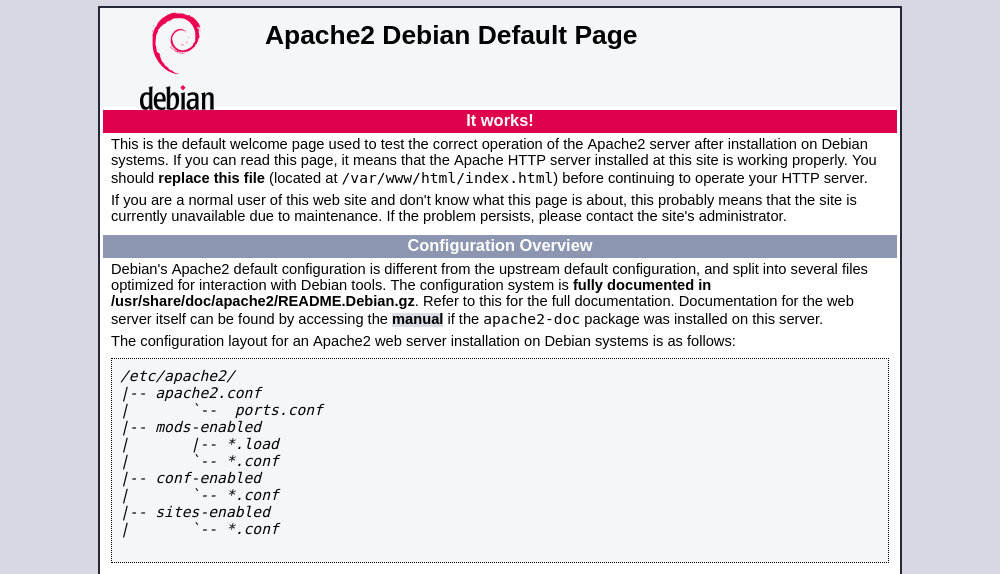

如何在Raspberry Pi上安装Apache Web Server
Apache HTTP 服务器是世界上最受欢迎的 Web 服务器之一。它是一个开源和跨平台的 HTTP 服务器，为大部分互联网网站提供支持。 Apache 提供了许多强大的功能，还可以通过其他模块进行扩展。
在本教程中，我们将解释如何在 Raspberry Pi 上安装 Apache Web 服务器。我们假设您在 Raspberry Pi 上安装了 Raspbian 。
安装 Apache
Apache 在默认的 Raspbian 存储库中可用，安装非常简单。
首先，更新软件包索引，然后 apache2 运行以下命令安装软件包：
sudo apt update
sudo apt install apache2就是这样，此时你在 Raspberry Pi 上安装了 Apache Web 服务器。
要验证一切是否按预期工作，请打开浏览器，键入您的 Raspberry Pi 的 IP 地址: http://PI_IP ，您将看到默认的 Apache 欢迎页面，如下图所示：

该页面包含有关 Apache 配置文件，帮助程序脚本和目录位置的一些基本信息。
此默认 Apache Web 的页面是 index.html ，并存储在 /var/www/html 目录中。如果要修改此页面，则需要使用 sudo 用户编辑文件。您也可以删除该文件并添加自己的 HTML 文件。
Apache 日志文件 access.log 以及 error.log 位于 /var/log/apache 目录。如果您遇到任何问题，日志文件应该告诉您出了什么问题。
安装 PHP
如果要在 Raspberry Pi 上提供动态 PHP 文件，则需要安装 PHP 和 PHP Apache 模块：
sudo apt install php libapache2-mod-php安装软件包以启用 PHP 模块后，重新启动 Apache 服务：
sudo systemctl restart apache2要测试您的 Apache Web 服务器是否已正确配置以进行 PHP 处理，请在 /var/www/html 目录中使用代码 info.php 创建一个新文件：
文件: /var/www/html/info.php
<?php
phpinfo();
保存文件，打开您选择的浏览器并访问 http://PI_IP/info.php 。此页面将显示有关 PHP 配置的信息。
结论
您已在 Raspberry Pi 板上成功安装了 Apache 和 PHP 。您现在可以开始将 Apache 用作 Web 或代理服务器。